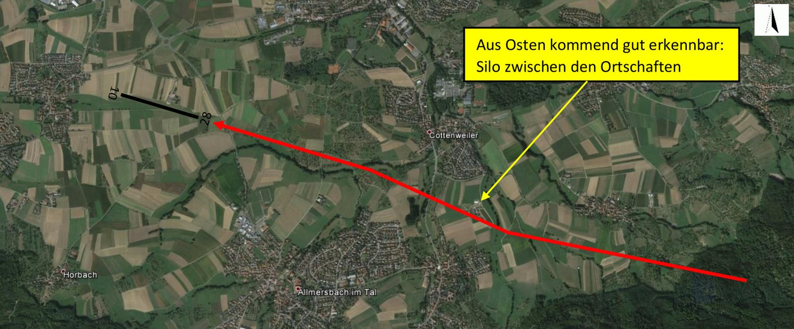

Anflug auf EDSH
Empfehlungen für einen leisen, sicheren An- und Abflug — zusammengetragen von ortsansässigen Piloten.
Der Sonderlandeplatz Backnang-Heiningen liegt inmitten der Backnanger Bucht, umgeben von zahlreichen Ortschaften in unmittelbarer Nähe. Als Betreiber des Platzes ist uns ein gutes nachbarschaftliches Verhältnis mit den umliegenden Gemeinden wichtig — dazu gehört auch der Umgang mit dem Thema Fluglärm.
Diese Empfehlungen sind keine Vorschrift. Die Verantwortung für eine sichere Flugdurchführung liegt ausschließlich beim Luftfahrzeugführer. Im Zweifelsfall geht Sicherheit immer vor Lärmschutz.
Anflug

Beim Anflug auf die Piste 10 lässt sich ein Überfliegen der Ortschaft Heiningen nicht vermeiden. Es sollte ein langer, gerader Endanflug erfolgen, so dass sowohl Heiningen als auch Maubach möglichst hoch, im Leerlauf und stabilisiert überflogen werden können.
Abflug
Bitte vermeiden Sie Überflüge über bebaute Gebiete, soweit es die Sicherheit zulässt. Die empfohlenen Abflugwege für beide Pisten haben wir ebenfalls als Kartenausschnitt zusammengestellt.
Lärmschutz auf einen Blick
Rot markierte Wohngebiete möglichst nicht überfliegen.
Grüne Pfeilrichtungen sind unser Vorschlag für An- und Abflüge.
Fliederfarbene Pfeile zeigen die offiziell veröffentlichten Verfahren.
Avoid overflying residential areas, especially the ones highlighted red. For departures and arrivals follow the green arrows; the lilac arrows depict the officially published procedures.